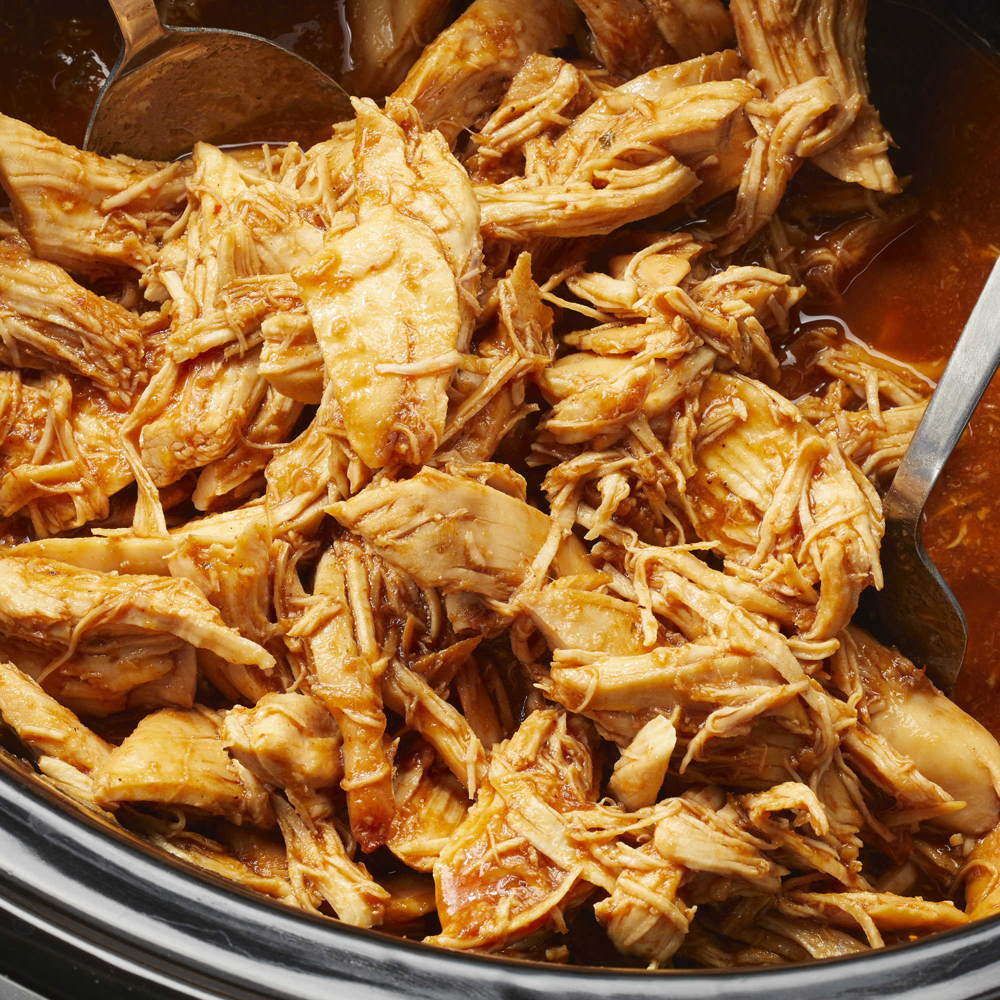

Zesty Slow Cooker Chicken Barbecue

Description
This pulled chicken crockpot dinner uses a slow cooker to prepare this great twist on basic barbecue chicken. Throw the chicken breasts in frozen, and serve with baked potatoes.
Ingredients
- 6 frozen skinless, boneless chicken breast halves
- 1 (12 ounce) bottle barbeque sauce
- ½ cup Italian salad dressing
- ¼ cup brown sugar
- 2 tablespoons Worcestershire sauce
Steps
- Place chicken in the slow cooker. Mix barbecue sauce, Italian salad dressing, brown sugar, and Worcestershire sauce in a bowl; pour mixture over chicken.
- Cover and cook on Low for 6 to 8 hours or on High for 3 to 4 hours. Shred and serve.